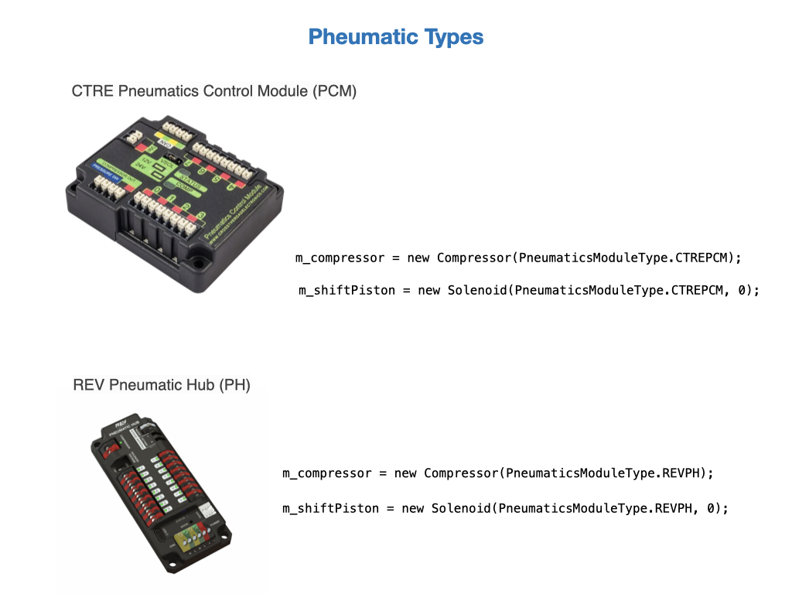

Pneumatics Control
Pneumatics are used extensively in FRC in cases where linear motion is required. This is in contrast to motors that provide rotational motion. Pneumatic actuators work on compressed air, and are used for fast on/off tasks with a high amount of applied force . This makes them ideal for robot mechanisims that must be quickly switched between two states, such as shifting gears on the drivetrain. A conceptual diagram of a pneumatic device is shown below.

Pheumatic Controllers are sold by two vendors CTR Electronics and Rev Robotics. The Compressor and Solenoid classes, that we’ll look at next, accept a hardware type parameter when constructing their objects.

The Compressor
Before using the pneumatics you need to start the compressor. This is usually done in the robotInit() method of the Robot class, and should be done prior to creating the RobotContainer. The following code uses the REV Pneumatic Hub (PH) controller and specifies its Node ID on the CAN bus. The default Node ID for PHs is 1.
public void robotInit() {
m_compressor = new Compressor(1, PneumaticsModuleType.REVPH);
m_robotContainer = new RobotContainer();
}
The CTRE Pneumatics Control Module (PCM) is defined in a similar way. The default Node ID for PCMs is 0. If the Node ID isn’t specified it defaults to the Node ID for the hardware type.
public void robotInit() {
m_compressor = new Compressor(PneumaticsModuleType.CTREPCM);
m_robotContainer = new RobotContainer();
}
For more information see Using the FRC Control System to control Pneumatics in the FRC documentation.
The Solenoids
The pneumatic solenoids are defined in the subsystem in which they are used. The example below sets up a solenoid on channel 0 of the CAN bus.
m_shiftPiston = new Solenoid(PneumaticsModuleType.CTREPCM, 0);
The solenoid position is set by sending a boolean value to the set() function of the Solenoid class.
private void setTrue() {
m_shiftPiston.set(true);
}
private void setFalse() {
m_shiftPiston.set(false);
}
Note, that the older solenoids require separate channels to switch between positions. These can be defined as shown below with the switching functions toggling between true and false.
m_shiftPistonHigh = new Solenoid(PneumaticsModuleType.REVPH, 2);
m_shiftPistonLow = new Solenoid(PneumaticsModuleType.REVPH, 3);
private void setTrue() {
m_shiftPistonHigh.set(true);
m_shiftPistonLow.set(false);
}
private void setFalse() {
m_shiftPistonHigh.set(false);
m_shiftPistonLow.set(true);
}
For more information see Solenoid control in the FRC documentation.
References
FRC Documentation Pheumatics APIs
FRC Video on Pneumatics